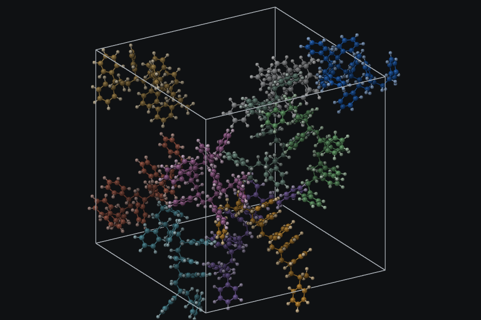

Build, pack and equilibrate polymer systems, with every step cited.
One program from monomer SMILES to an equilibrated cell. Its own engines for growth, packing, minimisation and dynamics, and LAMMPS input decks that reproduce its energies and forces.

Download
Linux
AppImage for any distribution, a .deb for Debian and Ubuntu, a PKGBUILD for Arch
CAPS-0.1.0-linux-x86_64.AppImage caps-studio_0.1.0_amd64.debFrom source
C++20 core with a Fortran PME kernel, CMake, .NET 10 for the Studio
github.com/MuhammadUzairRiaz/CAPSWhat it does
Growth from repeat units
Chains are built unit by unit from SMILES with two attachment points, choosing among trial torsions the placement with the most clearance, with periodic contact checks, back-tracking and restarts. Copolymer sequences, tacticity, blends, films on surfaces and fillers.
Packing without packmol
Rigid molecules in boxes, spheres, cylinders and half-spaces; the overlap penalty is minimised with L-BFGS and every contact is checked before a cell is returned. Packmol inputs open directly.
Its own MD engine
Velocity Verlet; Bussi and Langevin thermostats; stochastic cell rescaling and Berendsen barostats; damped shifted force or smooth PME electrostatics; the 21-step equilibration protocol.
Typing you can explain
Every atom type comes with the rule that assigned it, for GAFF, OPLS, PCFF, CVFF, CGenFF and UFF. Missing parameters stop the run; CAPS never guesses them.
Provenance by default
Every saved file carries its inputs, versions, seeds, approximations and citations, and CAPS writes the methods paragraph and BibTeX from it.
Benchmarks you can rerun
caps bench --all regenerates the validation tables: forces and virial against finite differences, PME against Ewald, NVE drift, thread scaling and reproducibility.
How to cite
A software paper is in preparation. Until then, cite the repository and the methods CAPS used — every provenance manifest lists them, and caps provenance FILE --bibtex writes the BibTeX.
Coming from scripts?
CAPS reads YAML and JSON recipes (caps run RECIPE.yaml): build, type, grow, relax, dynamics, equilibrate, analyse and export in one file. Packmol inputs import into Pack, and LAMMPS data files are written with their force field. The theory manual ships with the Studio.